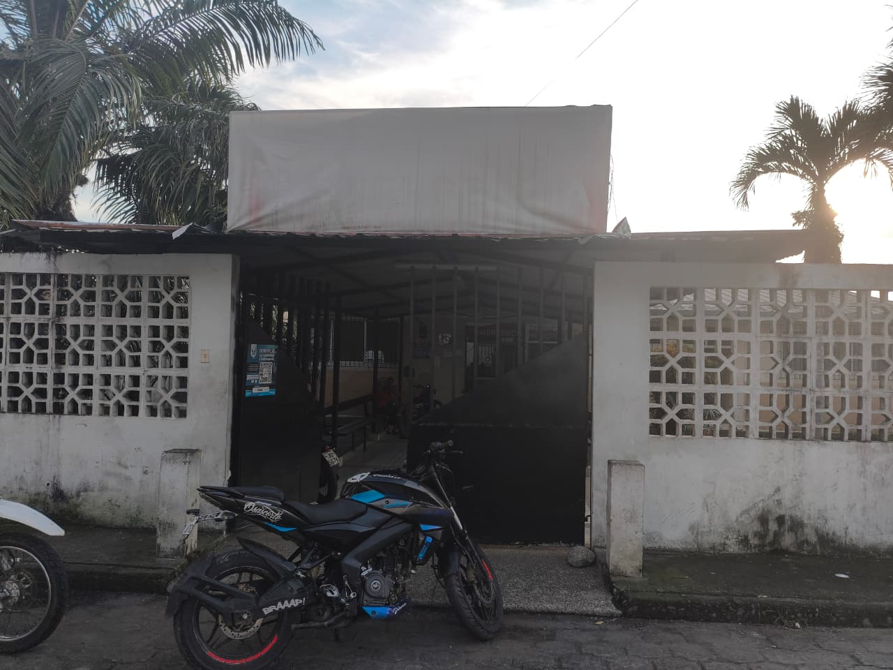
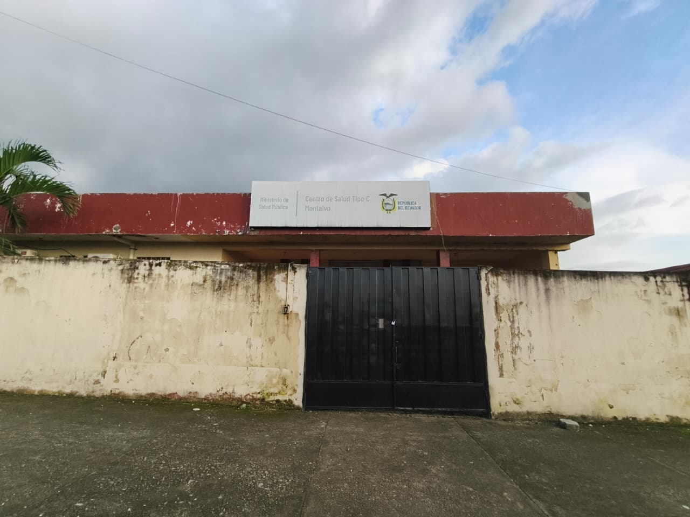

Instalaciones en Montalvo
El centro cuenta con áreas de consulta externa y acceso diferenciado para emergencias médicas según su nivel.


Servicios y pasos para acudir
Servicios disponibles
- Citas de medicina general y control prenatal para futuras madres montalvinas.
- Atención odontológica.
- Ecografías y exámenes médicos básicos.
- Chequeos preventivos, medición de IMC y derivación a otros establecimientos de la provincia cuando corresponda.
- Atención de emergencias médicas según su nivel.
Pasos para acudir a consulta
- Acuda al centro de salud en Montalvo llevando su cédula de ciudadanía.
- Preséntese en admisión o en el área de atención correspondiente.
- Indique si asiste a cita programada o si requiere atención de emergencia.
- Siga las indicaciones del personal de salud o la derivación indicada si su caso lo requiere.
Horarios de atención
Los horarios siguientes son referenciales; verifique disponibilidad en el centro antes de acudir.
| Área o servicio | Días | Horario |
|---|---|---|
| Medicina general, odontología y controles | Lunes a viernes | 08:00 a 16:00 |
| Ecografías y exámenes médicos | Lunes a viernes (según agenda) | 08:00 a 15:00 |
| Emergencias médicas (según nivel) | Lunes a domingo | Atención continua / guardia |
Video informativo y aviso de audio
Presentación del subcentro de salud en Montalvo
Aviso importante de la comunidad
Transcripción del audio: Recuerde acudir con su cédula a sus consultas en el Centro de Salud Tipo C Montalvo y utilizar el acceso de emergencias médicas según el nivel de su atención.
Contacto y ubicación
- Teléfono de referencia: Llamar al teléfono de referencia en Montalvo
- Correo electrónico: Enviar correo electrónico referencial sobre el Subcentro de Salud Montalvo
- WhatsApp: Escribir por WhatsApp referencial para consultas sobre el Subcentro de Salud Montalvo